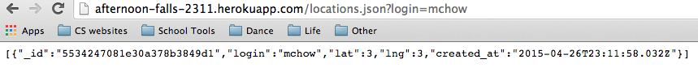
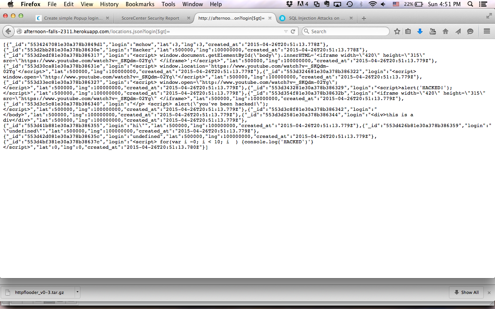
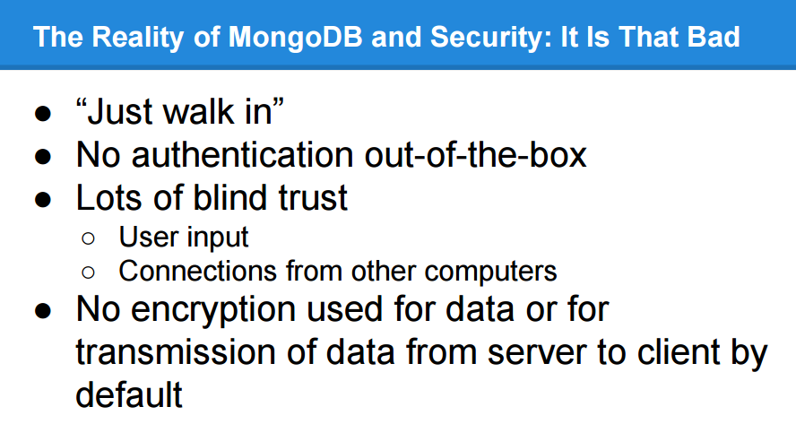
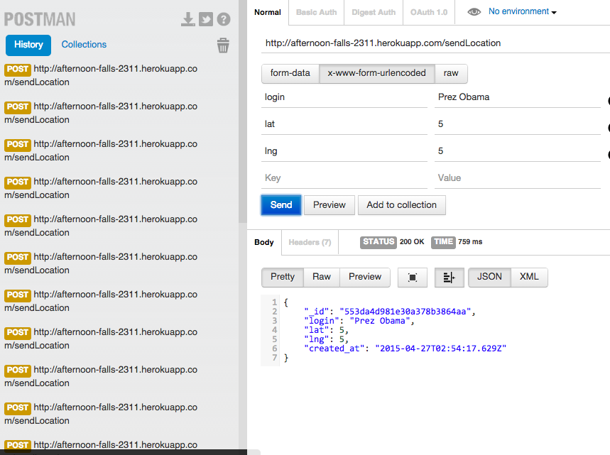
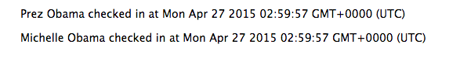
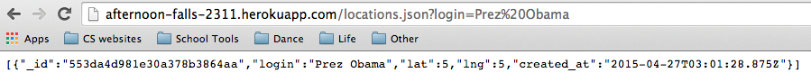
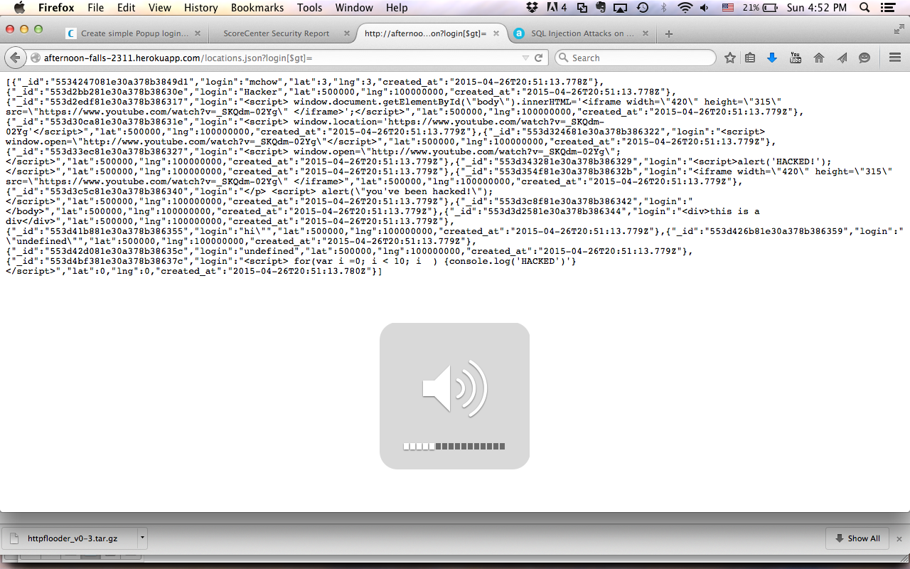

Prepared by Sibonay Koo • 4/26/2013
This assessment tests the security of the Marauder's Map web application and its server-side application developed by Gabe Jacobs for Comp20 assignment 2 and Comp20 assignment 3. According to the specifications he followed from his client, Marauder's Map "retrieves [the client's] current location and sends [his/her] current location to a datastore." It also offers a web interface using the Google Maps API that, using XMLHTTP requests, retrives and displays the locations of classmates. However, vulnerabilities in the application currently make it unsuitable for public use. This document identifies those vulnerabilities and suggests solutions for them.
Testing was first carried out "black-box", using just what would be available to an attacker. I then reviewed the code to find more logic errors and opportunities for server-side exploitation. To submit GET and POST requests, I used Curl and a Google Chrome extension called Postman. This report will focus on the server application both because it contains the sensitive information and also because it is more complex and has more interfaces for me to exploit.
This web application contains many security vulnerabilities that, if exploited, will affect the user experience at the very least, and may also pose actual security threats to the users. Most of these issues stem from the server side of the application placing too much trust in user input and assuming, not asserting, its correctness. Not only could a malicious user mishandle the Send Location interface to send falsified data to the server; he or she could also use the Locations interface to easily access sensitive information about every single one of the server's clients. Furthermore, the server allows absolutely anyone to send data to it and access its data, which poses an obvious risk to both the functionality of the web application and the security/privacy of its users. To resolve these issues, the application should include checks to ensure that any requests it receives contain valid parameters that also match the information sent by the client's browser (e.g. their IP address). It should add checks to make sure that only specific whitelisted applications may interact with it. Fortunately, the application does stop one of the most common types of attacks, as it prevents code that a hacker could submit as login data which would instead crash the site or modify the site's experience.
MongoDB Database Injections
login[$ne]=mchow, which uses the "not equal" operator, one can see the login details of all users who do not have the username "mchow". Alternatively, login[$gt]= returns every login "greater than" an empty string--i.e. all of them.
|  |  |
|  |
Enabling Cross Origin Resource Sharing
response.header("Access-Control-Allow-Origin", "*");. This header allows sharing with every origin (i.e. any site can send an XHR request to the site and access the server’s response). This has huge potential for abuse; for example, a remote hacker could access the login information of every user using the MongoDB operands mentioned above. MongoDB runs by default on TCP port 27017, so an attacker would simply need to run a port scan on the internet to find openly accessible databases: a major security breach occured only a couple months ago.header("Access Control Allow Origin: http://tuftsdev.github.io/comp20-gjacobs/mmap/"). If many domains need to be whitelisted, to prevent header clutter, it might be easier to only emit the header if necessary, i.e. when an OPTIONS request is gotten from a whitelisted domain:
if ($_SERVER["REQUEST_TYPE"] === "OPTIONS") { // special CORS track
$allowed_domains = array("http://my.domain.com", "https://my.domain.com", "http://my.otherdomain.com");
$calling_domain = get_calling_domain($_SERVER);
if (in_array($calling_domain, $allowed_domains)) {
header("Access-Control-Allow-Origin: " . $calling_domain);
}
exit; // no need to do anything else for OPTIONS request
}
Injection of false data
|  |  |  |
var ip = req.header('x-forwarded-for') || req.connection.remoteAddress;
Source: http://www.hacksparrow.com/node-js-get-ip-address.html
A more positive security note
|  |
As usage of this web application becomes heavier, it will become more and more necessary to address its vulnerabilities.To ensure its functionality and the security of its users, modifications to the server-side code should be made based on the recommendations given in this report. Fortunately, all the changes are easy to implement, and should only take a small amount of supplementary code. In the future, it would be helpful to keep in mind the innate security issues of using MongoDB's database system when adding additional features so that the web application does not fall victim to the attacks that thousands of users across the world have already encountered.